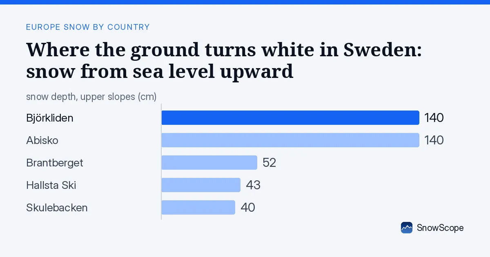
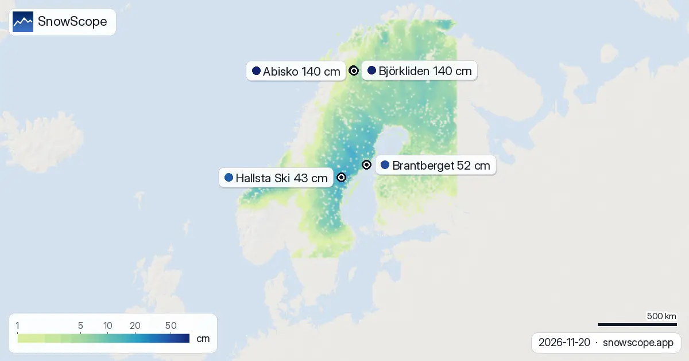
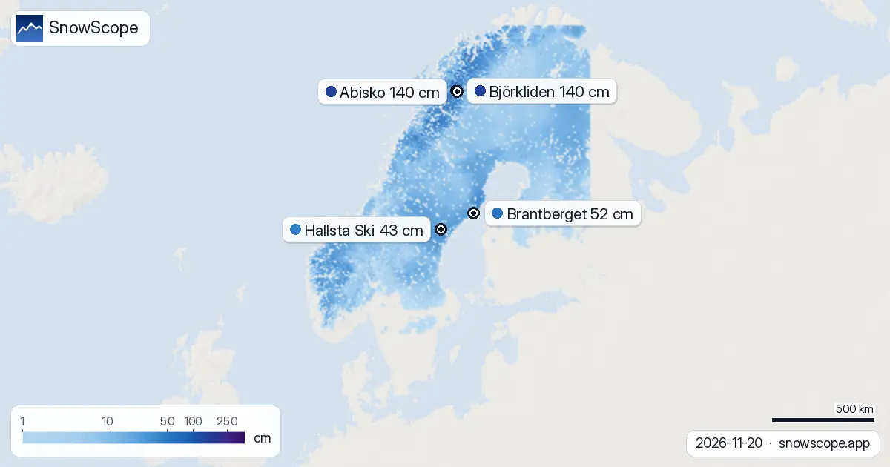

Where the ground turns white in Sweden: snow from sea level upward
Sweden woke to snow at every altitude on November 20. From the shoreline to the highest peaks, our model shows white ground across 90 percent of the country's ski terrain, with depth increasing sharply with height.
See the live snow forecast for Björkliden in the SnowScope appSnow depth, powder alerts and the 3D map, free.
Snow begins at zero metres
This is unusual for late November in Sweden. The snow line sits at sea level. When I work in the Atlas mountains, we measure when white reaches lower elevations; here, it has arrived everywhere at once. Across the 326,490 square kilometres of terrain we map, 293,780 square kilometres—90 percent—lie under snow on November 20. That is a jump of 37,100 square kilometres in seven days.
The lowest band, from 0 to 500 metres, averages 12 cm depth and shows 86 percent snow cover. The ground still shows through in a few valleys and sheltered places, but the pattern is clear: Sweden has entered winter.
| Resort | Snow depth | New snow, 72 h | Coming, next days | Top |
|---|---|---|---|---|
| Björkliden | 140 cm | 3 cm | 3 cm | 933 m |
| Abisko | 140 cm | 3 cm | 2 cm | 902 m |
| Brantberget | 52 cm | 24 cm | 3 cm | 83 m |
| Hallsta Ski | 43 cm | 34 cm | 6 cm | 320 m |
| Skulebacken | 40 cm | 33 cm | 5 cm | 286 m |

Depth doubles, then triples, as you climb
Height shapes the snowpack in Sweden more than anywhere I observe. Between 500 and 1000 metres, depth rises to 16 cm and cover reaches 100 percent. Step up to 1000-1500 metres, and you find 42 cm—nearly three times the sea-level figure. Above 1500 metres, the average swells to 67 cm. This is the classic pattern of a continental winter system: cold air settles on high ground and holds the snow that falls.
Björkliden and Abisko, both near 900 metres, hold 140 cm measured at their stations on November 20. Hallsta Ski and Skulebacken, lower resorts around 300 metres, sit at 43 and 40 cm. The vertical spacing matters for route choice and for understanding how much of each resort will ski well in the weeks ahead.

Fresh snow across two-thirds of the country
In the past 72 hours, 204,420 square kilometres received 5 cm of new snow or more—that is two-thirds of the mapped area. The maximum fall in that window was 21 cm. Yesterday alone brought up to 7 cm to some locations. This was not uniform: Björkliden and Abisko added only 3 cm in three days, while Hallsta Ski received 34 cm and Skulebacken 33 cm. The storm system fed the lower and middle elevations more heavily than the far north.
Where the best snow sits now
Björkliden leads the country at 140 cm, matched by Abisko. Both sit in the far north where snow has been accumulating steadily through the week. Five of Sweden's 75 resorts have already reported snow; 74 of them carry measurable snow cover on November 20.
If you seek depth and stability, the far-north resorts offer the strongest base. If you want to find fresh snow on skiable slopes, the central and southern resorts—Hallsta Ski, Skulebacken, and Brantberget—received the heaviest recent additions and sit at heights where 100 percent snow cover now holds.
What comes next
Our model forecasts 13 cm of new snow across Sweden in the next three days, with November 22 as the snowiest day at around 5 cm. The following week adds another 14 cm, spread unevenly. No single event looks extreme, but the trend is toward thicker snow at all heights.
Norway's border areas, modelled separately, hold deeper snow already: Riksgränsen stands at 188 cm. Finland, to the east, lies drier at 64 percent cover, with Pyhä at only 28 cm. Sweden sits between these two patterns—wetter than Finland, shallower than Norway's highest ground, but now fully white.
The week in numbers
Seven days ago, 256,680 square kilometres of Sweden showed snow. Today, 293,780 do. That gain of 37,100 square kilometres in one week shows a country transitioning from autumn to full winter. Yesterday to today, the white area grew by 9,090 square kilometres as fresh systems moved through. The pace has been steady rather than dramatic, but the direction is settled: winter is here, and it is filling in from bottom to top.
Tips for skiers
- Check local avalanche bulletins before leaving marked terrain. Early-season snow on steep slopes can slide, especially where fresh layers rest on thin older snow.
- Björkliden and Abisko offer the deepest, most stable bases in the country right now; resorts below 500 metres may still have thin patches in protected areas.
- Hallsta Ski and Skulebacken received the heaviest recent snow; slopes there may offer the best powder for the next few days before it settles.
- Above 1000 metres, all terrain is white and covered; below 500 metres, some lower valleys may still show thinness or ground.
- Use SnowScope's height bands to plan your route: if you ski at 1500 metres, expect three times the depth you would find at sea level.
About these numbers
Resort snow depths are the deepest snow on the resort's upper slopes from the SnowScope snow model (about 1 km, run of 20 November); they are estimates for an area, not a measurement at one point. Station values are measurements on the date shown. Forecasts can change. Always read the official avalanche bulletin before going off-piste.
Cite this report
For research, teaching or the press: the numbers and charts are free to reuse under CC BY 4.0 with this citation.
SnowScope (2026), Where the ground turns white in Sweden: snow from sea level upward, https://snowscope.app/blog/en/2026/11/sweden-snow-line-20-november-2026.html, accessed 2026-11-20
SnowScope (Atlas Labs). (2026, November 20). Where the ground turns white in Sweden: snow from sea level upward. SnowScope snow reports. https://snowscope.app/blog/en/2026/11/sweden-snow-line-20-november-2026.html
BibTeX
@misc{snowscope2026swedensnowline20november,
author = {{SnowScope (Atlas Labs)}},
title = {Where the ground turns white in Sweden: snow from sea level upward},
year = {2026},
month = nov,
howpublished = {\url{https://snowscope.app/blog/en/2026/11/sweden-snow-line-20-november-2026.html}},
note = {Published 2026-11-21 12:59 UTC; accessed 2026-11-20}
}· CC BY 4.0 · Methods, data and tools →
Björkliden: snow and temperature by height, this winter vs last (tools) →
Follow Björkliden
Free: a message when fresh snow is coming, and the forecast every morning.
More snow reports

From 13 to 19 November 2026 Slovenia got the most snow and kept it; Serbia and Croatia had a deep but short white weekend; Montenegro only on Durmitor; Bulgaria almost none. The ranking, with links to each country report.

Snow is falling on Slovenia's ski mountains today: about 37 cm on Kanin and 21 cm on Krvavec. Where the snow lies, how it compares with past winters, and the next snowy day.

Pick a region, dates, budget and what matters; get every resort ranked with the likely snow at the start, the pass, hotel and food per person, chalets to book, and a game mode.